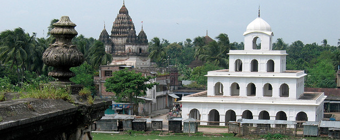
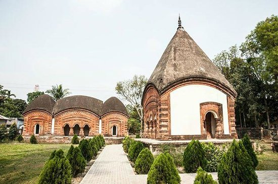
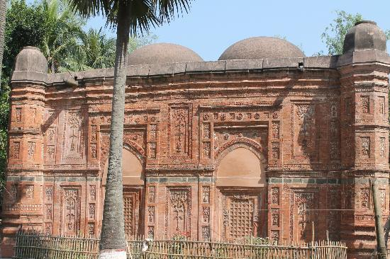

Puthia Palace  
Puthia is about 28km east of Rajshahi town and is connected to the Rajshahi-Natore highway by a 200m stretch of feeder road towards the south. This derelict but imposing palace faces the ‘Dol-Mancha’ temple across a large meadow to the north presenting a projection on each of its eastern and western ends. Its central part, which is about 15m wide, has an imposing portal in front. The building has two other smaller projections on either end and a further inset at the rear. A 3 meter wide verandah runs along the front of the block and provides access to some large halls behind. The balcony roof is supported on three graceful semi-Corinthian round and fluted columns which reach up to the upper storey. The central part of the building is relieved with a triangular pediment and the parapet is tastefully decorated with floral plasterwork. A broad wooden staircase, which is built into the eastern end of the verandah, provides access to the upper storey. Each projecting end of the edifice is relieved with four semi-Corinthian columns. A bilingual inscription fixed over the portal records its construction in 1895 by Rani Hemanta Kumari Devi. There are to be seen a few more out-buildings in its premise, all being built in the same period.
How to go
Rajshahi – Natore highway, one kilometer south of puthiya bas stand. and only five minutes from the highway. Distance of 34 kilometers by road from the city of Rajshahi.
Hotel:
1. Hotel Dalas International
Extra Facilities: Boiled Water, Television for Each Room, Car Parking, Attached Bath. Address:
Bindur More, Rail Gate, Rajshahi
Phone: 0721-811470, 0721-773839, Mobile: 0171-802387
2. HOTEL NICE International
Address: Ganakpara, Shaheb Bazar (West of P.N Girls High School) Rajshahi-6100
Phone: 0721-776188, 0721-771808
Fax : 88-0721-775625
Email: Hotel.nice@yahoo.com
Bagha Mosque, Rajshahi
 Built in 1523 A.D. by Sultan Nusrat Shah, son of Hussain Shah, it is a richly decorated monument originally roofed over with 10 domes which collapsed long ago but recently rebuilt carefully to their original form. The superb terracotta decoration on the central mihrab represents floral frame work and jali rosettes. The whole outer surface of the mosque is beautifully embellished with fine terracotta art motifs.one can start his journey for the monument from Rajshahi Railway Station by any kind of motorized vehicle.
Padma Garden
Rajshahi is a metropolitan city in Bangladesh and a major urban, commercial and educational centre of North Bengal. It is the administrative seat of Rajshahi Division & Rajshahi District . Located on the north bank of the Padma River, near the Bangladesh-India ..... Kashia-Danga: From this area massive mango tree garden area of Rajshahi ...